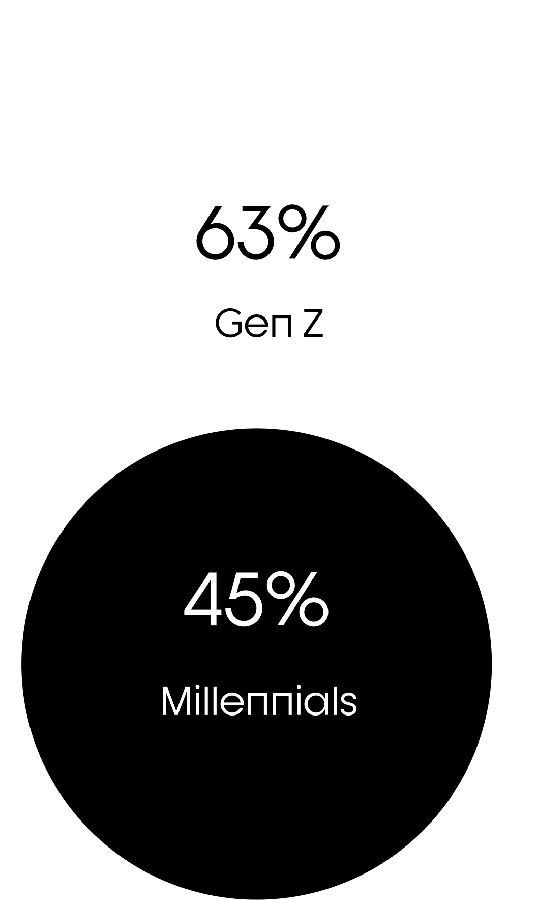
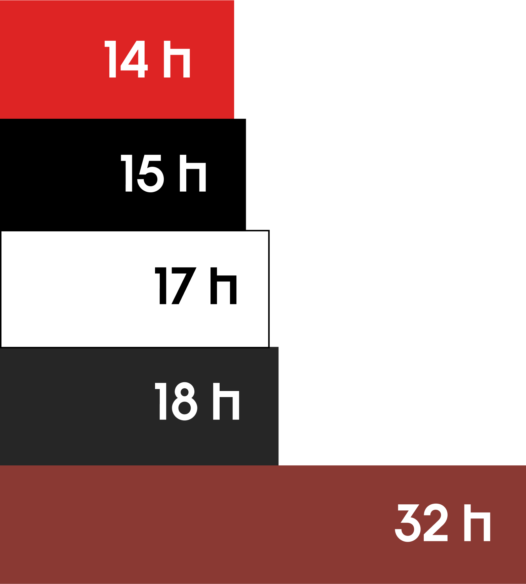
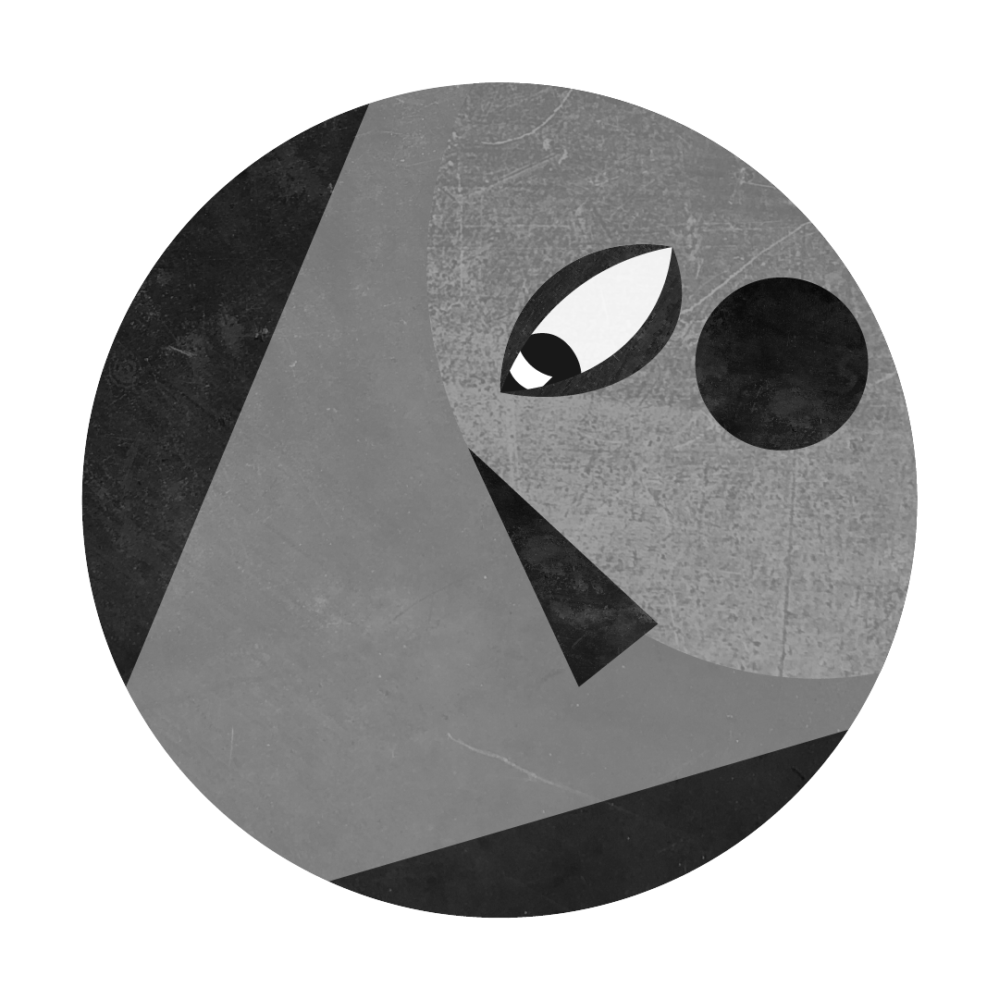
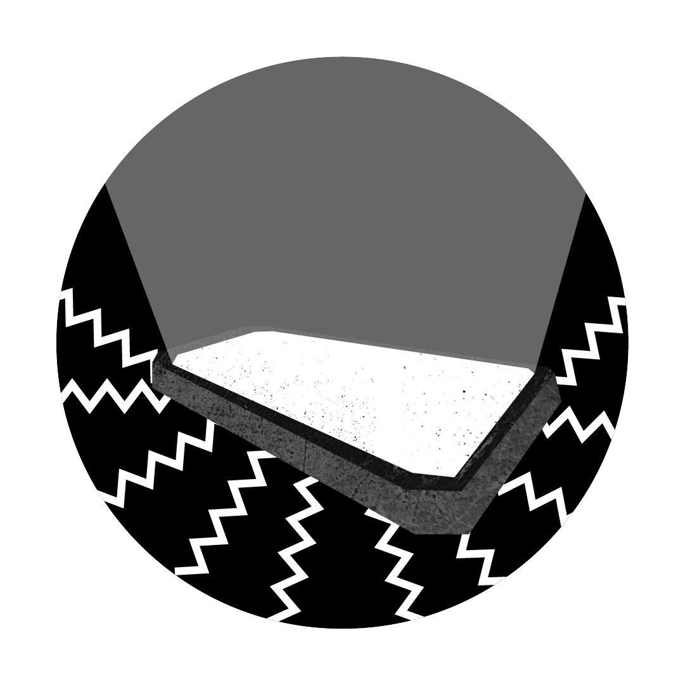

FOMO: la fobia del nuovo millennio.
FOMO è l’acronimo di "Fear of Missing Out", che in italiano significa "paura di essere tagliati fuori" o "paura di perdersi qualcosa".
Questo termine inizia a diffondersi nei primi anni 2000, rappresentando un fenomeno psicologico in cui una persona prova ansia o disagio pensando di perdere esperienze sociali, eventi o opportunità che gli altri stanno vivendo.
FOMO per fasce di età.
Con l’ascesa dei social media, la FOMO si è rapidamente affermata come una delle principali problematiche legate alla vita digitale, interessando soprattutto le generazioni più giovani.

56%
delle persone
ha paura di essere escluso dalle esperienze sociali.

Ogni istante diventa imperdibile.
Questo termine racchiude l’ansia di essere esclusi da esperienze, eventi o momenti importanti che gli altri sembrano vivere, una sensazione amplificata dalla continua esposizione alle vite “perfette” mostrate online.
La FOMO nasce dall’intersezione tra bisogni psicologici e impatto della tecnologia. Il desiderio di sentirsi accettati e parte di un gruppo, unito all’esposizione continua alle vite altrui sui social media, genera ansia e paura di perdere momenti importanti. Gli algoritmi digitali amplificano il fenomeno, proponendo contenuti emozionali e “imperdibili”.
Tempo medio speso al mese sui social media.
In Italia, l’uso crescente di piattaforme digitali è uno dei principali fattori che alimentano il famoso “effetto FOMO”.

Quando la realtà è digitale.
I social media: uno dei principali fattori scatenanti della FOMO.
Funzionalità come notifiche, storie temporanee e algoritmi che promuovono i contenuti più popolari spingono l’utente a controllare continuamente le piattaforme. In Italia, piattaforme come Instagram e TikTok giocano un ruolo centrale, mostrando costantemente frammenti di vite “perfette” che alimentano il confronto e la paura di perdersi qualcosa.

- Youtube
- TikTok
La dipendenza da smartphone è in grado di produrre:


Una minaccia per la salute mentale.
La FOMO è legata ad ansia, depressione e bassa autostima, è considerata come un disturbo comportamentale.
Dal punto di vista psichico può causare stress cronico, insoddisfazione e difficoltà relazionali. Sul piano fisico, spesso porta a disturbi del sonno, affaticamento mentale e difficoltà a rilassarsi, soprattutto a causa dell’uso prolungato dello smartphone, dunque gli effetti combinati possono compromettere il benessere complessivo di un individuo.
Ti riconosci nel fenomeno descritto o conosci qualcuno che potrebbe esserlo?
Sappi che puoi chiedere supporto.
La FOMO non è una problematica da sottovalutare, con l’aiuto di professionisti è possibile superarla. Non esitare a farti sentire.